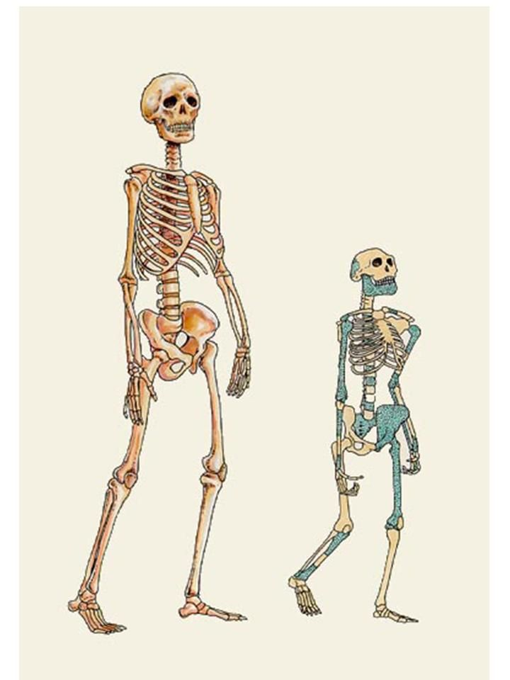
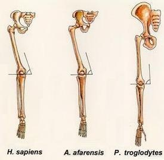
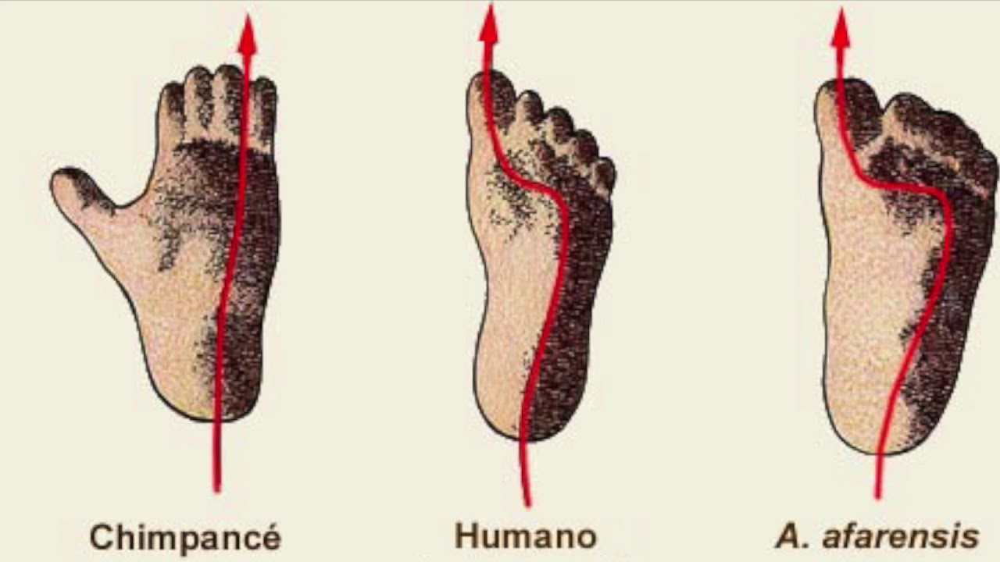
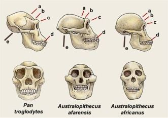

5.2. Determinantes de la evolución humana
5.2. Determinantes de la evolución humana
El ser humano ha sido fruto de un doble proceso de evolución: biológica y social. De ahí que se hable de un proceso de coevolución que tiene su arranque en un dilatado proceso evolutivo general de las especies, y de algunas especies sociables de grandes primates que, por determinadas circunstancias, en unas secuencias encadenadas de mutaciones y cambios adaptativos, empezaron a desarrollar habitualmente una posición erguida. La posición erecta del cuerpo, que camina erguido sobre dos de sus extremidades, es una característica que no posee ningún otro mamífero.
1. El bipedismo, unido a la especial configuración de las vértebras, que permiten un considerable giro del cuello, posibilita un mayor campo de visibilidad desde el suelo y, así, una mayor movilidad. De esta manera, la capacidad de previsión y de reacción ante los peligros se ve favorecida considerablemente.

Por otra parte, caminar erguido sobre las dos extremidades inferiores permite que los brazos queden libres para otros cometidos.


2. Las manos del ser humano están totalmente liberadas, tanto de la función de sostén que tienen en otros primates, como de su utilización para facilitar la tarea de caminar. Liberados los brazos de esas funciones, las manos pueden utilizarse para desarrollar funciones distintas.
3. El movimiento relativamente independiente de los dedos (dedo pulgar oponible) no sólo posibilita que las manos se utilicen como órganos prensiles, sino que además permite mayores posibilidades de manipulación y, así, de utilización de instrumentos.
4. La especie humana cuenta, además, con un cerebro inmensamente más desarrollado que el del resto de los animales pertenecientes al orden de los primates. Por un lado, la capacidad craneal en la especie humana es mayor. Por otra parte, y esto sí es fundamental, es mucho mayor el cerebro: es mayor su tamaño, y es mayor su complejidad neurológica.

5. Otro rasgo fundamental que distingue a la especie humana de otras especies animales es la peculiar forma en que está construida la laringe, y su propia posición en la cavidad bucal, sin la que no sería posible la especificidad del lenguaje humano.
La combinación de estas características específicas del ser humano hace posible que la actuación humana no se limite al simple logro de la supervivencia. Puesto que tiene un cerebro y un sistema nervioso muy complejo, puede “archivar” y “transformar” de una forma peculiar las informaciones que recoge. Puesto que camina erguido y tiene las manos liberadas del simple uso motriz, puede además utilizar instrumentos e incluso diseñar estrategias que utilicen instrumentos para construir otros nuevos. El ser humano puede modificar el mundo y transformarlo para cambiar las condiciones de su supervivencia, y eso hace posible su distanciamiento del medio natural.